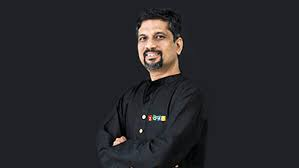
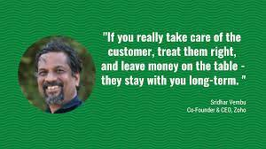
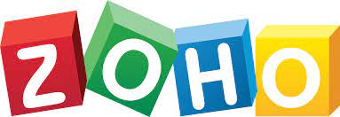
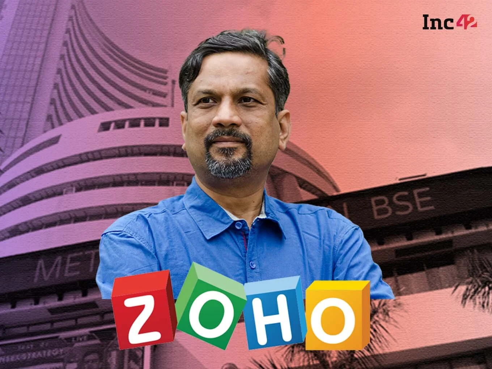
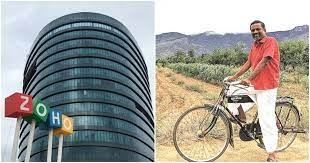

Sridhar Vembu (born 1968) is an Indian billionaire business magnate and the founder and CEO of Zoho Corporation. According to Forbes, he is the 55th richest person in India with a net worth of $3.75 billion, as of 2021. He was awarded India's fourth highest civilian award, the Padma Shri, in 2021.
Vembu was born in 1968 in a middle class Tamil family from a village in Thanjavur district, Tamil Nadu. He graduated with a bachelor's degree in Electrical Engineering from the Indian Institute of Technology, Madras in 1989, and earned his MS and PhD degrees from Princeton University in New Jersey.
In 2019- Ernst & Young “Entrepreneur of the Year Award” in India.In 2021- Padma Shri, India’s fourth highest civilian honor.In 2021- He was appointed to the National Security Advisory Board (NSAB) of India.
Vembu belongs to a very modest middle-class family. His mother was a housewife and his father was a stenographer in the High Court in Chennai. Sridhar started his primary education in a government-aided Tamil-medium school and then moved on to IIT-Madras for his under-graduation. Post that, Vembu obtained his bachelor’s degree in Electrical Engineering from Princeton University in 1989.
 Sridhar Vembu is an Indian entrepreneur, founder & CEO of Zoho Corporation, most renowned software and CRM companies. ZOHO software company was founded in 1996 that focuses on office suite and web-based business tools. He is living in Pleasanton, California. Sridhar Vembu is the 76th richest man in India, according to Forbes. Sridhar Vembu is a very simple man, wears a simple dress and likes to drive a Toyota car.
After completing Ph.D., he joined Qualcomm, an American multinational semiconductor and telecommunications equipment company in San Diego in 1994. Being an Electrical Engineer, he started to work on wireless communication including aspects like wireless communications, CDMA, and power control. Sridhar Vembu had gained a keen interest in Economics and Political Science.
Sridhar started Vembu Software from a small apartment located in the suburbs of Chennai in 1996 with Tony Thomas, who had some experience in network management software. From 1996 to 2003, Vembu Software was known as AdventNet.inc. ZOHO CRM was launched in 2005. After introducing the project, Sheet, and creator, invoicing and mail application features, the ZOHO CRM had 1 million users by august 2008.
The company got a name called ZOHO corporation in 2009. Sridhar Vembu and his family own 88% of the ZOHO share. At present, ZOHO has more than 50 million users all over the world. The software company has taken a 375-acre campus in Austin, Texas. ZOHO Corporation has also established ZOHO University.
ZOHO is a unique and powerful suite of software and web-based online office suite that contains invoicing, note-taking, web conferencing, wikis, word spreadsheets, presentations, databases, project management, and much more application.
 